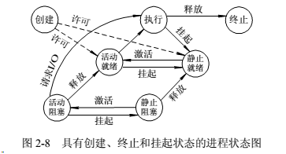

操作系统：一组控制和管理计算机硬件和软件资源，合理地对各类作业进行调度，以及方便用户使用的程序的集合。
分类：单道批处理系统、多道批处理系统、分时系统、实时系统。
构成：内核、系统调用、shell、库函数、应用程序。区分库函数和系统调用（malloc和sbrk）。
*操作系统的作用（增强系统功能、隐藏对硬件操作的细节）
1.OS是用户与计算机之间的
接口，用户通过OS来使用计算机系统。用户可通过以下三种方式使用计算机：命令方式、系统调用方式和图形、窗口方式。
2.OS 是计算机系统资源的管理者，计算机系统中的资源可分为四类：处理器、存储器、I/O 设备以及信息：程序和数据。相应地，OS 的主要功能也正是针对这四类资源进行有效的管理，即：处理机管理（用于分配和控制处理机）；存储器管理（主要负责内存的分配与回收）；I/O 设备管理（ 负责 I/O 设备的分配与操纵）；文件管理（ 负责文件的存取、共享和保护）。
3.OS 实现了对计算机资源的抽象，相当于用户层与硬件层之间的中间层。
操作系统的目标：1有效性：提高系统资源利用率；提高吞吐量。2 方便性。3 可扩充性。4 开放性。
操作系统的基本特性：
1 并发性：并发（同一时刻），并行（同一时间段）；进程；线程。
2 共享性：系统中的资源可供内存中多个并发执行的进程或线程共同使用。互斥共享；
3 虚拟技术：一个物理实体变为若干个逻辑上的对应物。
4 异步性：进程以不可预知的速度向前推进。
*操作系统五大功能模块（操作系统的主要功能）
（1）处理机管理。处理机管理的主要指对进程的管理，因此她的主要功能是创建和撤消进程(进程控制)，对诸进程的运行进行协调(进程同步)，实现进程之间的信息交换(进程通信) ，以及按照一定的算法把处理机分配给进程(调度)。
（2）存储器管理。存储器管理的主要任务是为多道程序的运行提供良好的环境，方便用户使用存储器，提高存储器的利用率以及能从逻辑上扩充内存。为此，存储器管理应具有内存分配、内存保护、地址映射和内存扩充等功能。
（3）设备管理。设备管理用于管理计算机系统中所有的外围设备，它主要涉及缓冲管理、设备分配和设备处理以及虚拟设备等功能。
（4）文件管理。文件管理的主要任务是对用户文件和系统文件进行管理，以方便用户使用，并保证文件的安全性。为此，文件管理应具有对文件存储空间的管理、目录管理、文件的读/写管理，以及文件的共享与保护等功能。
（5）操作系统与用户之间的接口。为了方便用户使用，OS 向用户提供了两大类接口：1) 用户接口。它是提供给用户使用的接口，用户可通过该接口取得操作系统的服务；2) 程序接口。 它是提供给程序员在编程时使用的接口， 是用户程序取得操作系统服务的惟一途径。
1、什么是进程（Process）和线程（Thread）？有何区别？
*进程和线程（结合linux谈谈进程和线程的关联）
*进程的同步机制
进程的异步性会造成系统的混乱，尤其是在他们争用临界资源的时候。（可以取个例子，例如，当多个进程去争用一台打印机时，有可能使多个进程的输出结果交织在一起，难于区分；而当多个进程去争用共享变量、表格、链表时，有可能致使数据处理出错。）为了正确地使用临界资源，多个进程必须互斥地使用临界资源。我们把在每个进程中访问临界资源的那段代码称为临界区(critical section)。显然，若能保证诸进程互斥地进入自己的临界区，便可实现诸进程对临界资源的互斥访问。为此，每个进程在进入临界区之前，应先对欲访问的临界资源进行检查，看它是否正被访问。如果此刻该临界资源未被访问，进程便可进入临界区对该资源进行访问，并设置它正被访问的标志（即加锁）；如果此刻该临界资源正被某进程访问，则本进程不能进入临界区（即获得锁失败）。因此，必须在临界区前面增加一段用于进行上述检查的代码， 把这段代码称为进入区(entry section)。 相应地，在临界区后面也要加上一段称为退出区(exit section)的代码，用于将临界区正被访问的标志恢复为未被访问的标志。OS中利用信号量、管程来实现进程间d的同步。
*进程调度
*多线程如何共享数据
*死锁
*linux进程管理机制
*linux内存分配机制
*虚拟内存
文件：指具有文件名的若干相关元素的集合。文件==》记录项==》数据项。文件结构：
文件的逻辑结构。这是从用户观点出发所观察到的文件组织形式，是用户可以直接处理的数据及其结构，它独立于物理特性，又称为文件组织。文件逻辑结构，主要有顺序文件（提前预知大小）、索引文件（额外索引表）、索引顺序文件和直接文件、哈希文件（这两种不常见）。
文件的物理结构，又称为存储结构，是指文件在外存上的存储组织形式。方式：连续分配，链接分配（隐式或显式-FAT），索引分配（单级、多级、混合）。
文件目录：用于标识系统中的文件及其物理地址，供检索时使用。文件控制块的有序集合。一个文件控制块就是一个文件目录项（也称目录文件）。
目录管理：文件控制块（FCB）（文件名、文件物理地址、文件逻辑结构、文件物理结构、存取控制信息、使用信息），索引节点（i结点，提高文件搜索速度）即将文件目录中的文件名和文件描述信息分开。文件描述信息形成索引节点。
存储空间管理：空闲表，空闲链表，位示图，成组链接法。文件共享：软链接，硬链接。
*文件流的操作（不带缓冲）
open():传进一个文件名，换系统一个唯一的最小的未使用的描述符。create()。
close()
read()：返回读到的字节数。
wtite()：
lseek():字节数偏移量。
*文件共享（指不同的进程之间对于打开的文件）
内核数据结构：进程表中的记录项（fd,文件指针）、文件表（状态标志、当前文件偏移量、V节点指针）、V节点结构（对多文件系统类型提供支持）。
dup():复制一个现存的文件描述符，即复制进程表中的记录项。
fcntl():改变已打开文件的性质，通过fd即可。复制现有的描述符、文件描述符标记、记录锁。。。
*文件信息
stat():返回struct stat结构，包含文件类型（普通、目录、块特殊、FIFO、套接字、符号链接）、实际用户/组ID（文件性质）、有效用户/组ID（进程性质）、保存的设置用户/组ID（exec保存）、执行权限（拥有者、组、其它）；
chmod:更改现有文件的访问权限。
chown:更改文件的用户ID和组ID。
标准I/O库（带缓冲）
将一个流与一个文件 相关联。目的：减少调用read和write的次数，自动地进行缓冲管理。
缓冲：全缓冲（缓冲区满）、行缓冲（换行符）、不带缓冲
FILE* fopen():打开一个标准的I/O流。
getc()、getchar()；gets(),fgets()；
putc()、putchar()；puts(),fputs()；
fseek();
printf（）；fprintf()；输入到指定缓冲区 sprintf();snprintf();
进程环境：
进程控制：
ID=0：调度进程，并不执行磁盘上的程序，称为系统进程。
ID=1：init进程，负责在自举内核后启动一个UNIX系统，即读与系统有关的初始化文件，将系统引导到一个状态。以超级用户权限运行。所有孤儿进程的父进程。会调用wait对所有僵死进程进行处理。
ID=2：页守护进程，
fork():创建一个新进程。文件锁、信号量集、闹钟都不会被继承。
exit():
wait()/waitpid()（可以有不同处理选项）:获取提前结束的子进程的信息。子进程终止时对父进程发送SIGCHLD信号。
僵死进程：一个已经终止的进程但是其父进程尚未对其进行善后处理。
exec():
进程关系：
进程组、会话。
信号：提供了一种处理异步事件的方法。
*进程的特征
1.结构特性：进程由PCB、程序段、数据段三部分构成 2. 动态性（最基本） 3.并发性 4.独立性 5.异步性
*进程的状态

*进程挂起的原因
1.终端用户的请求。2.父进程请求。3.负荷调节的需要。4.负荷调节的需要。
设备管理：I/O设备，按速率分为低速、中速、高速；按信息交换单位分为块设备和字符设备；按共享属性分为独占设备、共享设备和虚拟设备三种。
通道是一种特殊的处理机，通道按传递数据的方式分为：字节多路通道，数组选择通道，数组多路通道。
I/O控制方式：程序I/O方式，中断驱动I/O方式，直接存储器访问（DMA），I/O通道控制方式。
DMA：
特点：传输单位为数据块；从设备直接到内存；传送一个块的开始或结束位置需要CPU干扰。
缓存管理：单缓冲，双缓冲，循环缓冲和缓冲池。
SPOOLing技术：将一台物理I/O设备虚拟成多台逻辑设备，允许多个用户共享一台物理设备。
组成：两输入输出井、两输入输出缓冲区、两输入输出进程。
打印机共享过程：1 由输出进程在输出井中申请一个空闲磁盘块，并将要打印的数据送入其中； 2为用户进程申请一张用户请求打印表，并挂到打印队列上。
假脱机操作，在多道程序环境下，利用多道程序中的一道或者两道程序来模拟脱机输入/输出中的外围控制机的功能，以达到“脱机”输入/输出的目的。
磁盘空间的地址有盘面号，柱面号，扇区号组成。访问磁盘的时间有寻道时间，旋转等待时间，读写时间。
进程间的两种制约关系：间接相互制约关系，直接相互制约关系。
名词：临界资源 – Critical Resource； 临界区 – critical section。
进程同步方法：信号量机制（整型信号量，记录型信号量，AND型信号量，信号量集），管程机制。
高级进程通信：共享存储器系统，消息传递系统以及管道通信系统。
进程同步机制应遵循的规则：空闲让进，忙则等待，让权等待，有限等待。
线程间同步方法：互斥锁、条件变量、计数信号量以及多读、单写锁等。
死锁：多个进程因竞争资源而造成的一种僵局，没有外力的作用，进程不能向前推进。
进程死锁的原因：资源竞争及进程推进顺序非法。
死锁的4个必要条件：互斥、请求和保持、不可剥夺、环路等待。
处理死锁的基本方法：预防死锁，避免死锁，检测死锁，解除死锁。
进程有哪些基本特征？
动态性：进程的实质是程序的一次执行过程，进程是动态产生的，动态消亡的。
独立性：进程是一个能独立运行的基本单位，同时也是分配资源和调度的独立单位。
并发性：任何进程都可以同其他进程一起并发执行。
异步性：由于进程间的相互制约，使得执行具有间断性，即进程按照独立的，不可预知的速度向前推进。
比较进程和程序之间的异同，并说明它们有怎样的对应关系。
区别：(1)从定义上看，程序是一组指令的有序集合；进程是程序的运行过程；(2)从结构上看，进程不仅包含程序段，还包含数据段和PCB；(3)进程是动态的，而程序是静态的；(4)进程可独立地、并发地执行，程序则不能独立、并发执行。
对应关系：（1）在某个时刻一个进程对应于一个程序；（2）在整个生命周期中，进程可执行多个程序；（3）一个程序多次执行则将对应多个进程。
进程与线程的主要区别
线程是指进程内的一个执行单元，也是进程内的可调度实体。与进程的区别：
(1)调度：线程作为调度和分配的基本单位，进程作为拥有资源的基本单位；
(2)并发性：不仅进程之间可以并发执行，同一个进程的多个线程之间也可并发执行；
(3)拥有资源：进程是拥有资源的一个独立单位，线程不拥有系统资源，但可以访问隶属于进程的资源；
(4)系统开销：在创建或撤消进程时，由于系统都要为之分配和回收资源，导致系统的开销明显大于创建或撤消线程时的开销。
进程调度的算法：先来先服务、短进程优先、时间片轮转、高优先权优先。
先来先服务调度算法（FCFS）：每次调度是从就绪队列中，选择一个最先进入就绪队列的进程，把处理器分配给该进程，使之得到执行。该进程一旦占有了处理器，它就一直运行下去，直到该进程完成或因发生事件而阻塞，才退出处理器。特点：利于长进程，而不利于短进程。
短进程优先调度算法(SPF)：它是从就绪队列中选择一个估计运行时间最短的进程，将处理器分配给该进程，使之占有处理器并执行，直到该进程完成或因发生事件而阻塞，然后退出处理器，再重新调度。
时间片轮转调度算法：系统将所有的就绪进程按进入就绪队列的先后次序排列。每次调度时把CPU分配给队首进程，让其执行一个时间片，当时间片用完，由计时器发出时钟中断，调度程序则暂停该进程的执行，使其退出处理器，并将它送到就绪队列的末尾，等待下一轮调度执行。
高优先权优先调度算法：它是从就绪队列中选择一个优先权最高的进程，让其获得处理器并执行。
存储器层次：寄存器，高速缓存，主存，磁盘缓存，磁盘，可移动存储介质。
连续内存分配方式：单一连续分配，固定分区分配，动态分区分配，伙伴系统，可重定位分区分配。
非连续：基本分页，基本分段，段页式，请求分页，请求分段。
虚拟存储器：指具有请求调入功能和置换功能，能从逻辑上对内存容量加以扩充的一种存储器系统。
页面置换算法：最佳置换算法（理论算法）、先进先出（FIFO）、最近最久未使用（LRU）、Clock算法（又称最久未使用算法NRU）、其它算法（最少使用LFU、页面缓冲算法PBA）
说说分段和分页
页是信息的物理单位，分页是为实现离散分配方式，以消减内存的外零头，提高内存的利用率；或者说，分页仅仅是由于系统管理的需要，而不是用户的需要。
段是信息的逻辑单位，它含有一组其意义相对完整的信息。分段的目的是为了能更好的满足用户的需要。
页的大小固定且由系统确定，把逻辑地址划分为页号和页内地址两部分，是由机器硬件实现的，因而一个系统只能有一种大小的页面。段的长度却不固定，决定于用户所编写的程序，通常由编辑程序在对源程序进行编辑时，根据信息的性质来划分。
分页的作业地址空间是一维的，即单一的线性空间，程序员只须利用一个记忆符，即可表示一地址。分段的作业地址空间是二维的，程序员在标识一个地址时，既需给出段名，又需给出段内地址。
一：操作系统
1. 进程的有哪几种状态，状态转换图，及导致转换的事件。
2. 进程与线程的区别。
3. 进程通信的几种方式。
4. 线程同步几种方式。(一定要会写生产者、消费者问题，完全消化理解)
5. 线程的实现方式. (也就是用户线程与内核线程的区别)
6. 用户态和核心态的区别。
7. 用户栈和内核栈的区别。
8. 内存池、进程池、线程池。(c++程序员必须掌握)
9. 死锁的概念，导致死锁的原因.
10. 导致死锁的四个必要条件。
11. 处理死锁的四个方式。
12. 预防死锁的方法、避免死锁的方法。
13. 进程调度算法。(周转时间 = 程序结束时间 -- 开始服务时间、带权周转时间= 周转时间 / 要求服务时间)
14. Windows内存管理的方式(块式、页式、段式、段页式).
15. 内存连续分配方式采用的几种算法及各自优劣。
16. 动态链接及静态链接.
17. 基本分页、请求分页储存管理方式。
18. 基本分段、请求分段储存管理方式。
19. 分段分页方式的比较各自优缺点。
20. 几种页面置换算法，会算所需换页数。(LRU用程序如何实现？)
21. 虚拟内存的定义及实现方式。
22. 操作系统的四个特性。
23. DMA。
24. Spooling。
25. 外存分配的几种方式，及各种优劣。